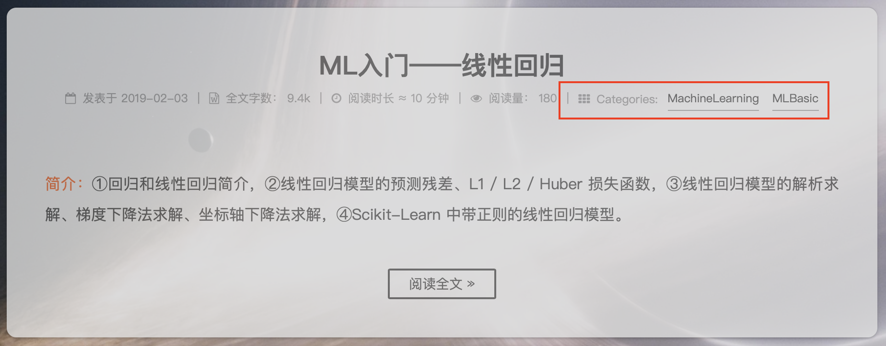
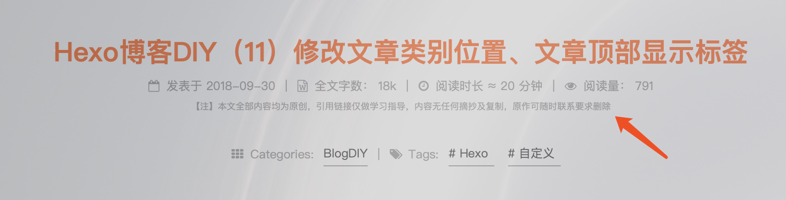

1. 首页文章列表分类位置调整 让文章的分类在首页与其他信息显示在同一行，而在进入具体某篇文章后，分类则与标签单独显示在下一行内。首先解决分类的部分，修改 next/layout/_macro/post.swig：
1 2 3 4 5 6 7 8 9 10 11 12 13 14 15 16 17 18 19 20 21 22 23 24 25 {### 调整文章列表分类的位置 ###} {### 个人喜欢把分类放在最后 ###} {### 在分类上面添加以下内容 ###} {### 文章列表分类前加分隔符 ###} {### 正文显示分类前加换行符 ###} {% if post.categories and post.categories.length and theme.post_meta.categories %} {% if is_index %} <span class "post-meta-divider" >|</span> {% endif %} {% if post.tags and post.tags.length and not is_index %} <div><br/></div> {% endif %} {% endif %} {### 以下是分类的部分 ###} {#################} {## Categories ###} {#################} {% if post.categories and post.categories.length and theme.post_meta.categories %} ...... {% endif %}
返回首页可以看到文章列表的文章信息末尾已经有分类了，点进去某篇文章，分类和标签则是另起一行显示：
不过，如果文章的分类多于两个，在中文模式下，Next 主题会使用中文逗号“，”来分隔，个人觉得并不是那么好看，或许可以也改一改，在分类的代码里面找到：
1 2 3 4 5 6 7 8 {% for cat in post.categories %} ...... {% if cat_length > 1 and loop.index !== cat_length %} {{ __('symbol.comma' ) }} {% endif %} {% endfor %}
代码中的：
1 {{ __('symbol.comma' ) }}
对应了语言配置文件中的 comma，在中文模式中，comma 对应的就是中文逗号，由于只想改掉这一个地方，所以直接把这行替换一下就好了，我用的就是一个半角空格  ，和标签的分隔保持统一风格。效果如下：

2. 文首显示标签并与分类对齐 在 Next 主题中所有的文章称为 Post ，默认情况下 Post 的标签是在文章底部的，不够我个人觉得这样并不适合读者在阅读文章前了解文章的大致方向，或许应该像论文一样，把标签放在文首更好。关于文章内的各个控件、内容的布局都在：next/layout/_macro/post.swig 文件中。先找到文章标签对应的代码：
1 2 3 4 5 6 7 8 9 10 11 12 13 14 15 16 17 18 19 <footer class "post-footer" > {### ↓↓↓以下就是标签代码↓↓↓ ###} {% if post.tags and post.tags.length and not is_index %} {% if theme.tag_icon %} {% set tag_indicate = '<i class="fa fa-tag"></i>' %} {% else %} {% set tag_indicate = '#' %} {% endif %} <div class "post-tags" > {% for tag in post.tags %} <a href="{{ url_for(tag.path) }}" rel="tag" >{{ tag_indicate }} {{ tag.name }}</a> {% endfor %} </ div> {% endif %} {### ↑↑↑以上就是标签代码↑↑↑ ###} ...... </footer>
这段就是标签的代码了。直接把这段剪切到上面和分类代码同级的地方：
1 2 3 4 5 6 7 8 9 10 11 12 13 {### 分类代码 ###} {% if post.categories and post.categories.length and theme.post_meta.categories %} ...... {% endif %} {### 标签代码 ###} {% if post.tags and post.tags.length and not is_index %} ...... {% endif %}
不过这样移完会发现分类和标签的大小、高度都不一致，有点参差不齐的感觉，甚是不爽。修改细节就不详细介绍了，直接给出我目前在用的代码：
1 2 3 4 5 6 7 8 9 10 11 12 13 14 15 16 17 18 19 20 21 22 23 24 25 26 27 28 29 30 31 32 33 34 35 36 37 38 39 40 41 42 43 44 45 46 47 48 49 50 {#################} {## Categories ###} {#################} {% if post.categories and post.categories.length and theme.post_meta.categories %} <span class "post-category" > <span class "post-meta-item-icon" style="text-align:center;font-size:12px;vertical-align:middle;display:inline-block;" > <i class "fa fa-th" ></i> </span> {% if theme.post_meta.item_text %} <span class="post-meta-item-text" style="text-align:center;font-size:12px;vertical-align:middle;display:inline-block;"> {{ __('post.in') }}:  </ span> {% endif %} {% for cat in post.categories %} <span itemprop="about" itemscope itemtype="http://schema.org/Thing">{# #}<a style="vertical-align:middle;display:inline-block;" href="{{ url_for(cat.path) }}" itemprop="url" rel="index">{# #}<span itemprop="name" style="text-decoration: none; font-size:12px">{{ cat.name }}</span>{# #}</a>{# #}</span> {% set cat_length = post.categories.length %} {% if cat_length > 1 and loop.index !== cat_length %} {{ __('symbol.comma' ) }} {% endif %} {% endfor %} </span> {% endif %} {#################} {##### Tags ######} {#################} {% if post.tags and post.tags.length and not is_index %} {% if post.categories and post.categories.length and theme.post_meta.categories %} <span class="post-meta-divider" style="vertical-align: middle;display:inline-block;">|</ span> {% endif %} <div class "post-tags" style="display: inline" > <div style="text-align:center;vertical-align: middle;display:inline-block;font-size:12px;" > <i class "fa fa-tags" ></i> Tags:  </div> {% for tag in post.tags %} <span style="display:inline-block;vertical-align: middle;" itemscope itemtype="http:/ /schema.org/ Thing">{# #}<a href=" {{ url_for(tag.path) }}" rel=" tag"># {{ tag.name }} </a>{# #}</span> {% endfor %} </div> {% endif %}
还需要对 Tags 的显示样式文件 next/source/css/_common/components/post/post-tags.styl 做一些修改：
1 2 3 4 5 6 7 8 9 10 11 12 .posts-expand .post-tags { margin-top: 20 px; text-align: center; text-decoration: none; a { display: inline-block; margin-right: 10 px; font-size: 12 px; text-decoration: none; } }
效果如下：
大致来说我做的修改就是：调整了文字、连接的大小，使分类和标签一致，调整了链接和文字的位置为垂直居中，使得链接看起来不会下面拖了一个很不美观的下划线。
3. 文首增加原创声明 首先可以看到，我的文章顶部属性以及分类和标签的中间有这么一行小字：

声明一个原创标识还是有必要的，但是这么多文章，如果每个都手动写在正文内太麻烦，虽然可以通过 blog/scaffolds/post.md 文件定义好声明语句，在新文章生成时自动添加，但是这种方式只能添加到正文中，而这种声明感觉更偏向于文章属性，所以还是添加到文首比较好。
首先在 next/languages/ 目录下找到需要动态修改语言的对应语言文件，在 post 字段下添加如下属性：
1 2 3 4 5 6 7 8 9 post: ...... originalStatement: 【Note】This is an original post by SLLiu on liushulun.cn, requiring authorization before any quote or repost. post: ...... originalStatement: 【注】本文由 SLLiu 原创于 liushulun.cn，参考链接仅做学习指导，引用前请务必联系授权。
具体的声明内容就看自己喜好了。然后在文章内的头部属性栏添加一个自定义布尔类型属性 hideOriginalStatement：
1 2 3 4 5 --- title: Hexo博客DIY（11）修改文章类别位置、文章顶部显示标签 author: SLLiu hideOriginalStatement: false ---
再修改 next/layout/_macro/post.swig：
1 2 3 4 5 6 7 8 {####################} {##### 原创声明 ######} {####################} {% if not post.hideOriginalStatement and not is_index %} <div> <font color=#999999 size=1>{{ __('post.originalStatement') }}</font> </div> {% endif %}
以上代码可以添加到自己想放的位置，我自己放在了正文上面。文字显示的样式也可以随意调整。由于我的博客基本全部都是原创文章，为了方便，在模板文件 blog/scaffolds/post.md 内设置每篇文章自动增加原创声明的属性：
1 2 3 4 5 --- title: {{ title }} author: SLLiu hideOriginalStatement: false ......
因为我绝大部分文章都是原创，所以用 hideOriginalStatement: false，这样当某篇文章忘记加这个字段时，(not post.hideOriginalStatement) == true，默认就会增加原创声明。
用相同的思路，还可以添加例如“转载声明”，“引用声明”等等。
更多进一步的个性化欢迎参考：博客 DIY 系列